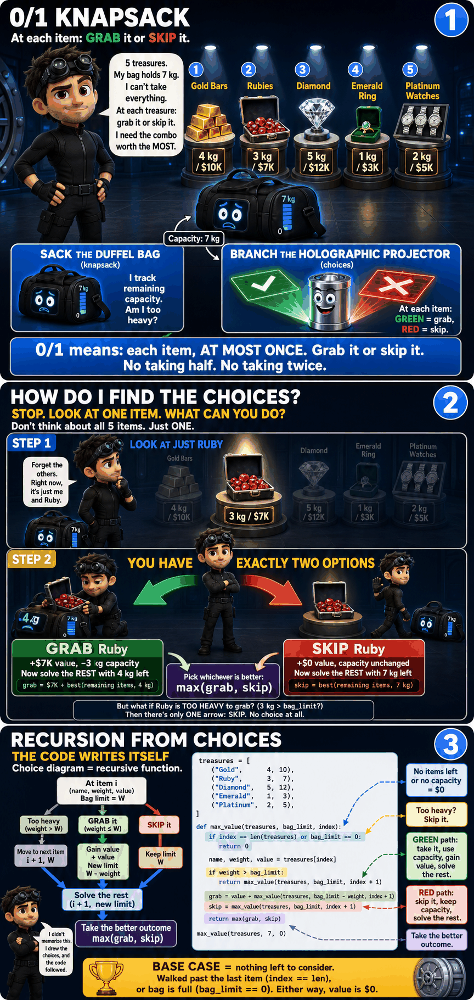
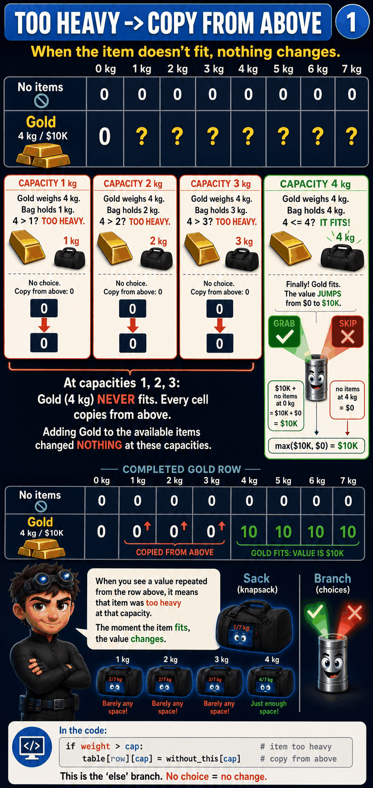
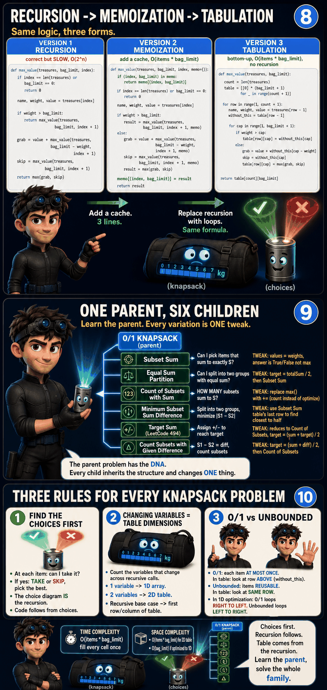

Aditya Verma's Pipeline
Every DP problem, same method. Don't memorize templates. Build the solution from the choices.
The choices ARE the problem. Find them first.
THAT'S WHY IT'S DP.
Recursive base case → first row/column of the table. Same formula, bottom-up.
Three Golden Rules
The DP Families
Every DP problem belongs to a family. The parent teaches the pattern. Each variation is one tweak.
| Family | Parent Problem | Key Choice | # Variations | Status |
|---|---|---|---|---|
| 0/1 Knapsack | Knapsack (take/skip, capacity limit) | GRAB it or SKIP it | 6 | ✓ Done |
| Unbounded Knapsack | Coin Change (items reusable) | Use it AGAIN or move on | 3 | Coming |
| LCS | Longest Common Subsequence | Match, skip from A, skip from B | 10 | Coming |
| Linear/Fibonacci | Climbing Stairs | Step 1 or step 2 | 4 | Coming |
| Palindrome | Longest Palindromic Substring | Expand or stop | 2 | Coming |
| State Machine | Buy & Sell Stock | Buy, sell, or rest | 3 | Coming |
| Interval/MCM | Matrix Chain Multiplication | Where to split | 5 | Coming |
| Grid DP | Unique Paths | Go right or go down | 3 | Coming |
How to Identify the Family
Unbounded Knapsack: "coin change", "combinations", items can be reused
LCS: comparing two sequences, "common", "edit distance", "interleaving"
Linear: simple recurrence, look back 1-2 steps, "climbing stairs", "decode ways"
Palindrome: "palindromic", symmetry, expanding from center
State Machine: "buy and sell", "cooldown", multiple states per step
Interval: "burst balloons", "matrix chain", choosing where to split a range
Grid: "unique paths", "minimum path sum", 2D grid traversal
Family 1: 0/1 Knapsack
The parent of 6 problems. At each item: GRAB it or SKIP it. Same item, same capacity? Same answer. Don't solve it twice.

The Setup
| Treasure | Weight | Value |
|---|---|---|
| Gold Bar Stack | 4 kg | $10K |
| Ruby Collection | 3 kg | $7K |
| Diamond Display | 5 kg | $12K |
| Emerald Ring Box | 1 kg | $3K |
| Platinum Watches | 2 kg | $5K |

Step 1: What Are My Choices?
This is how EVERY knapsack problem starts. At each treasure, Kit has two choices:
weight <= remaining capacity?)IF IT FITS (two branches):
✅ GRAB: add value, reduce capacity, move to next item
❌ SKIP: keep capacity, move to next item
→ Take the MAX of both paths
IF IT DOESN'T FIT (one branch only):
❌ SKIP: move to next item (no choice!)
Step 2: Choices → Recursion (the code writes itself)
The choice diagram IS the recursive function. Each branch = a recursive call.
treasures = [('Gold',4,10), ('Ruby',3,7), ('Diamond',5,12), ('Emerald',1,3), ('Platinum',2,5)]
def max_value(treasures, bag_limit, count):
if count == 0 or bag_limit == 0:
return 0
name, weight, value = treasures[count - 1]
if weight <= bag_limit:
grab = value + max_value(treasures, bag_limit - weight, count - 1)
skip = max_value(treasures, bag_limit, count - 1)
return max(grab, skip)
else:
return max_value(treasures, bag_limit, count - 1)if weight <= bag_limit → "Does it fit?"grab = value + ... → GREEN pathskip = ... → RED pathmax(grab, skip) → "Take the better one"
count == 0 → No items leftbag_limit == 0 → No capacity leftEither way → value is $0
Base case = smallest valid input
count - 1?count is how many items we're considering (1 to 5). But Python lists start at index 0.So
treasures[count - 1] just says: "the count-th item is at index count - 1."When
count = 3, we want the 3rd item (Diamond), which is at index 2.

Step 3: Draw the Tree, Spot the Overlap
Using 4 treasures: Gold (4kg), Ruby (3kg), Emerald (1kg), Platinum (2kg), W=7.
The recursion processes items in reverse: Platinum (n=4), Emerald (n=3), Ruby (n=2), Gold (n=1).
Two different paths through the tree arrive at the SAME subproblem:
→ GRAB Platinum (2kg)
→ (3, 5)
→ GRAB Emerald (1kg)
→ (2, 4)
→ SKIP Ruby
→ (1, 4)
→ SKIP Platinum
→ (3, 7)
→ SKIP Emerald
→ (2, 7)
→ GRAB Ruby (3kg)
→ (1, 4)
Step 4: Memoize (3 extra lines)
Same recursive code. Just add a cache. That's it.
def max_value(treasures, bag_limit, count, memo={}):
if (count, bag_limit) in memo:
return memo[(count, bag_limit)] # ALREADY SOLVED? Return it!
if count == 0 or bag_limit == 0:
return 0
name, weight, value = treasures[count - 1]
if weight <= bag_limit:
grab = value + max_value(treasures, bag_limit - weight, count - 1, memo)
skip = max_value(treasures, bag_limit, count - 1, memo)
result = max(grab, skip)
else:
result = max_value(treasures, bag_limit, count - 1, memo)
memo[(count, bag_limit)] = result # STORE result
return result
Step 5: From Recursion to Table (one question at a time)
Every part of the table comes from a specific line in the recursion. Nothing is invented. Let's derive it question by question.

Q: Why a table? Why 2D?
Look at your recursive function signature:
def max_value(treasures, bag_limit, count):Cross out what stays the same across every recursive call:
2 variables change → 2D table. One dimension for each changing variable. That's it.
If only 1 variable changed, it would be a 1D array. If 3 changed, it would be 3D. The number of changing variables = number of dimensions. Always.
Q: What are the rows? What are the columns?
The two changing variables are count (items) and bag_limit (capacity). Each becomes one axis:
Row 1 = only Gold available
Row 2 = Gold + Ruby available
...
Row 5 = all 5 treasures available
Col 1 = bag holds 1 kg
Col 2 = bag holds 2 kg
...
Col 7 = bag holds 7 kg
So table[row][cap] answers: "What's the best value using the first row treasures with a bag that holds cap kg?"
This is exactly what the recursion computes. The table just stores every answer so you don't recompute.
Q: Why is the first row all zeros?
Look at your recursive base case:
if count == 0 or bag_limit == 0:
return 0count == 0 means "no items to consider." Row 0 in the table is exactly that: zero items available.
With zero items, no matter how much capacity you have (0 kg, 1 kg, ... 7 kg), the best value is always $0. You have nothing to grab.
| 0 kg | 1 kg | 2 kg | 3 kg | 4 kg | 5 kg | 6 kg | 7 kg | |
|---|---|---|---|---|---|---|---|---|
| No items | 0 | 0 | 0 | 0 | 0 | 0 | 0 | 0 |
| Gold | ||||||||
| Gold + Ruby | ||||||||
| + Diamond | ||||||||
| + Emerald | ||||||||
| + Platinum |
Recursion says: count == 0 → return 0. Table says: row 0 = all zeros. Same thing.
Q: Why is the first column all zeros?
Same base case: bag_limit == 0 → return 0
bag_limit == 0 means "bag has zero capacity." Column 0 is exactly that.
If your bag holds 0 kg, it doesn't matter how many items exist. You can't grab anything. Value = $0.
| 0 kg | 1 kg | 2 kg | 3 kg | 4 kg | 5 kg | 6 kg | 7 kg | |
|---|---|---|---|---|---|---|---|---|
| No items | 0 | 0 | 0 | 0 | 0 | 0 | 0 | 0 |
| Gold | 0 | |||||||
| Gold + Ruby | 0 | |||||||
| + Diamond | 0 | |||||||
| + Emerald | 0 | |||||||
| + Platinum | 0 |
Recursion says: bag_limit == 0 → return 0. Table says: column 0 = all zeros. Same thing.
Q: How do I fill each cell? Where does the formula come from?
Straight from the recursion. There are two cases:
return max_value(treasures, bag_limit, count - 1)table[row][cap] = without_this[cap]without_this = the row above (the world before this item existed).Same column (same capacity).
grab = value + max_value(bag_limit - weight, count - 1)
skip = max_value(bag_limit, count - 1)
return max(grab, skip)grab = value + without_this[cap - weight]
skip = without_this[cap]
table[row][cap] = max(grab, skip)without_this = the row above (the world before this item existed)[cap - weight] = column shifted left by this item's weight (capacity used up)SKIP = best value without this item, same capacity
without_this[cap] = row above, same column (just ignore this item entirely)Pick whichever is better.

Q: Why do some cells just copy the value from the row above?
Let's fill Gold's row, capacity 2: only Gold available, bag holds 2 kg.
Bag capacity: 2 kg
Does it fit? weight 4 <= capacity 2? NO. Gold is too heavy.
Kit has no choice. Gold doesn't fit. Skip it.
Copy from the row above ("no items" row at 2 kg) = 0
This is why you see many cells with the same value as the cell above. It means: "this item was too heavy for this capacity, so adding it to the available items changed nothing."
Look at Gold's row: at 0 kg through 3 kg, all zeros, copied from the "no items" row above. Gold weighs 4 kg, so it doesn't fit until capacity 4. At 4 kg, Gold finally fits, and the value jumps to $10K.

Q: Walk me through a full row. Step by step.
Gold's row is done. Now let's fill the Gold + Ruby row. Ruby weighs 3 kg, worth $7K.
At every cell, the same question: does Ruby's weight (3 kg) fit in this column's capacity?
| 0 kg | 1 kg | 2 kg | 3 kg | 4 kg | 5 kg | 6 kg | 7 kg | |
|---|---|---|---|---|---|---|---|---|
| Gold | 0 | 0 | 0 | 0 | 10 | 10 | 10 | 10 |
| Gold + Ruby | 0 | ? | ? | ? | ? | ? | ? | ? |
No choice. Copy from Gold's row above at 2 kg = 0.
Answer: $0 (copied from above)
GRAB: Ruby's value + best from Gold's row at remaining capacity
Remaining capacity = 3 − 3 = 0 kg. Look up Gold's row at 0 kg = $0.
$7K + $0 = $7K
SKIP: Just copy from Gold's row at same capacity
Gold's row at 3 kg = $0 (Gold didn't fit at 3 kg either)
max($7K, $0) = $7K. GRAB wins.
Ruby is the only item that fits at 3 kg. Grab it.
GRAB: Remaining capacity = 4 − 3 = 1 kg. Look up Gold's row at 1 kg = $0.
$7K + $0 = $7K
(After grabbing Ruby, only 1 kg left. Gold needs 4 kg. Nothing else fits.)
SKIP: Gold's row at 4 kg = $10K
(Skip Ruby, keep full 4 kg. Gold fits! $10K is better.)
max($7K, $10K) = $10K. SKIP wins.
Ruby fits, but taking it leaves too little room for Gold. Better to skip Ruby and take Gold instead.
GRAB: Remaining capacity = 7 − 3 = 4 kg. Look up Gold's row at 4 kg = $10K.
$7K + $10K = $17K
(Grab Ruby, 4 kg left, Gold fits too! Both items.)
SKIP: Gold's row at 7 kg = $10K
(Skip Ruby, just Gold = $10K.)
max($17K, $10K) = $17K. GRAB wins.
Enough capacity for Ruby AND Gold. Take both.
1. Does the item's weight fit in this column's capacity? (weight <= column)
2. NO → copy from the row above. No choice, nothing changes.
3. YES → compute GRAB and SKIP, pick the bigger one.
GRAB = item's value + row above at (column minus item's weight)
SKIP = row above at same column
That's it. Every cell, same logic.
The Complete Table
| 0 kg | 1 kg | 2 kg | 3 kg | 4 kg | 5 kg | 6 kg | 7 kg | |
|---|---|---|---|---|---|---|---|---|
| No items | 0 | 0 | 0 | 0 | 0 | 0 | 0 | 0 |
| Gold (4 kg/$10K) | 0 | 0↑ | 0↑ | 0↑ | 10 | 10 | 10 | 10 |
| + Ruby (3 kg/$7K) | 0 | 0↑ | 0↑ | 7 | 10↑ | 10↑ | 10↑ | 17 |
| + Diamond (5 kg/$12K) | 0 | 0↑ | 0↑ | 7↑ | 10↑ | 12 | 12↑ | 17↑ |
| + Emerald (1 kg/$3K) | 0 | 3 | 3 | 7↑ | 10 | 13 | 15 | 17↑ |
| + Platinum (2 kg/$5K) | 0 | 3↑ | 5 | 7 | 10↑ | 13 | 15 | 18 |
Cells with ↑ were copied from the row above (item didn't fit, or skipping was better).
Answer: bottom-right = $18K. Gold ($10K) + Emerald ($3K) + Platinum ($5K) = $18K at exactly 7 kg.
Why bottom-right? Because that cell means "all 5 treasures available, full 7 kg capacity." That's the original question.
The Tabulation Code
Every line maps to something we just derived:
def max_value(treasures, bag_limit):
table = [[0] * (bag_limit + 1) # first row + col = all zeros (base case)
for _ in range(len(treasures) + 1)]
for row in range(1, len(treasures) + 1): # row by row (each item)
name, weight, value = treasures[row - 1] # row 1 = Gold (index 0), row 2 = Ruby (index 1)...
without_this = table[row - 1] # the row above = world before this item existed
for cap in range(1, bag_limit + 1): # column by column (each capacity)
if weight <= cap: # does this item fit?
grab = value + without_this[cap - weight] # GRAB: value + row above, left by weight
skip = without_this[cap] # SKIP: row above, same column
table[row][cap] = max(grab, skip) # pick the better one
else:
table[row][cap] = without_this[cap] # NO: copy from above (can't use this item)
return table[len(treasures)][bag_limit] # bottom-right = all items, full capacity
At each item: grab or skip. Maximize total value within capacity.
1 Subset Sum
▶def subsetSum(nums, target):
dp = [False] * (target + 1)
dp[0] = True
for num in nums:
for j in range(target, num - 1, -1):
dp[j] = dp[j] or dp[j - num]
return dp[target]2 Equal Sum Partition
▶def canPartition(nums):
total = sum(nums)
if total % 2: return False
return subsetSum(nums, total // 2)3 Count of Subsets with Sum
▶max() with +=. Count instead of optimize. "HOW MANY subsets sum to S?"def countSubsets(nums, target):
dp = [0] * (target + 1)
dp[0] = 1
for num in nums:
for j in range(target, num - 1, -1):
dp[j] += dp[j - num]
return dp[target]4 Minimum Subset Sum Difference
▶def minimumDifference(nums):
total = sum(nums)
half = total // 2
dp = [False] * (half + 1)
dp[0] = True
for num in nums:
for j in range(half, num - 1, -1):
dp[j] = dp[j] or dp[j - num]
for j in range(half, -1, -1):
if dp[j]:
return total - 2 * j5 Target Sum (LeetCode #494)
▶def findTargetSumWays(nums, target):
total = sum(nums)
if (total + target) % 2 or abs(target) > total: return 0
goal = (total + target) // 2
dp = [0] * (goal + 1)
dp[0] = 1
for num in nums:
for a in range(goal, num - 1, -1):
dp[a] += dp[a - num]
return dp[goal]6 Count Subsets with Given Difference
▶def countWithDiff(nums, diff):
total = sum(nums)
if (total + diff) % 2 or abs(diff) > total: return 0
target = (total + diff) // 2
dp = [0] * (target + 1)
dp[0] = 1
for num in nums:
for j in range(target, num - 1, -1):
dp[j] += dp[j - num]
return dp[target]for j in range(num, target + 1):
dp[j] += dp[j - num]
# Same item counted MULTIPLE times!
# This is unbounded knapsack, not 0/1.for j in range(target, num - 1, -1):
dp[j] += dp[j - num]
# Each item used at most once.
# RIGHT to LEFT = 0/1 knapsack.# Target Sum: trying all 2^n combos
# of +/- signs with recursion.
# Exponential time, no DP insight.# P - (total - P) = target
# P = (total + target) / 2
# Now it's just: count subsets summing to P
goal = (total + target) // 221 Problems by Family
Linear Fibonacci / Linear Recurrence
1 Climbing Stairs (#70) Easy
▶n steps to reach the top. Each time you can climb 1 or 2 steps. In how many distinct ways can you climb to the top?def climbStairs(n):
if n <= 2: return n
prev2, prev1 = 1, 2
for i in range(3, n + 1):
prev2, prev1 = prev1, prev1 + prev2
return prev12 Min Cost Climbing Stairs (#746) Easy
▶cost where cost[i] is the cost of step i, find the minimum cost to reach the top. You can start from step 0 or step 1, and climb 1 or 2 steps at a time.def minCostClimbingStairs(cost):
prev2, prev1 = 0, 0
for i in range(2, len(cost) + 1):
prev2, prev1 = prev1, min(prev1 + cost[i-1], prev2 + cost[i-2])
return prev13 Decode Ways (#91) Medium
▶def numDecodings(s):
if s[0] == '0': return 0
prev2, prev1 = 1, 1
for i in range(1, len(s)):
curr = 0
if s[i] != '0':
curr += prev1
if 10 <= int(s[i-1:i+1]) <= 26:
curr += prev2
prev2, prev1 = prev1, curr
return prev14 Maximum Product Subarray (#152) Medium
▶def maxProduct(nums):
res = max(nums)
cur_max, cur_min = 1, 1
for n in nums:
vals = (n, n * cur_max, n * cur_min)
cur_max, cur_min = max(vals), min(vals)
res = max(res, cur_max)
return res0/1 Knapsack Take or Skip, Each Item Once
5 House Robber (#198) Medium
▶def rob(nums):
if len(nums) <= 2: return max(nums)
prev2, prev1 = nums[0], max(nums[0], nums[1])
for i in range(2, len(nums)):
prev2, prev1 = prev1, max(prev1, prev2 + nums[i])
return prev16 House Robber II (#213) Medium
▶def rob(nums):
if len(nums) <= 2: return max(nums)
def rob_line(arr):
prev2, prev1 = arr[0], max(arr[0], arr[1])
for i in range(2, len(arr)):
prev2, prev1 = prev1, max(prev1, prev2 + arr[i])
return prev1
return max(rob_line(nums[1:]), rob_line(nums[:-1]))7 Target Sum (#494) Medium
▶def findTargetSumWays(nums, target):
total = sum(nums)
if (total + target) % 2 or abs(target) > total: return 0
goal = (total + target) // 2
dp = [0] * (goal + 1)
dp[0] = 1
for num in nums:
for a in range(goal, num - 1, -1):
dp[a] += dp[a - num]
return dp[goal]Unbounded Knapsack Items Reusable
8 Coin Change (#322) Medium
▶def coinChange(coins, amount):
dp = [float('inf')] * (amount + 1)
dp[0] = 0
for coin in coins:
for a in range(coin, amount + 1):
dp[a] = min(dp[a], dp[a - coin] + 1)
return dp[amount] if dp[amount] != float('inf') else -19 Coin Change II (#518) Medium
▶+= instead of min. Base case dp[0] = 1 (one way to make 0). Outer loop = coins ensures unique combos (avoids counting [1,2] and [2,1] separately).def change(amount, coins):
dp = [0] * (amount + 1)
dp[0] = 1
for coin in coins:
for a in range(coin, amount + 1):
dp[a] += dp[a - coin]
return dp[amount]10 Word Break (#139) Medium
▶s and a dictionary of words, determine if s can be segmented into a space-separated sequence of dictionary words.def wordBreak(s, wordDict):
dp = [False] * (len(s) + 1)
dp[0] = True
words = set(wordDict)
for i in range(1, len(s) + 1):
for j in range(i):
if dp[j] and s[j:i] in words:
dp[i] = True
break
return dp[len(s)]Palindrome Expand from Center
11 Longest Palindromic Substring (#5) Medium
▶s, return the longest palindromic substring in s.def longestPalindrome(s):
res = ""
for center in range(len(s)):
for l, r in [(center, center), (center, center + 1)]:
while l >= 0 and r < len(s) and s[l] == s[r]:
if r - l + 1 > len(res):
res = s[l:r+1]
l -= 1; r += 1
return res12 Palindromic Substrings (#647) Medium
▶s, return the number of palindromic substrings in it.def countSubstrings(s):
count = 0
for center in range(len(s)):
for l, r in [(center, center), (center, center + 1)]:
while l >= 0 and r < len(s) and s[l] == s[r]:
count += 1
l -= 1; r += 1
return countLCS Two Sequences Compared
13 Longest Common Subsequence (#1143) Medium
▶text1 and text2, return the length of their longest common subsequence.def longestCommonSubsequence(text1, text2):
m, n = len(text1), len(text2)
dp = [[0] * (n + 1) for _ in range(m + 1)]
for i in range(1, m + 1):
for j in range(1, n + 1):
if text1[i-1] == text2[j-1]:
dp[i][j] = dp[i-1][j-1] + 1
else:
dp[i][j] = max(dp[i-1][j], dp[i][j-1])
return dp[m][n]14 Edit Distance (#72) Medium
▶word1 and word2, return the minimum number of operations (insert, delete, replace) to convert word1 to word2.def minDistance(word1, word2):
m, n = len(word1), len(word2)
dp = [[0] * (n + 1) for _ in range(m + 1)]
for i in range(m + 1): dp[i][0] = i
for j in range(n + 1): dp[0][j] = j
for i in range(1, m + 1):
for j in range(1, n + 1):
if word1[i-1] == word2[j-1]:
dp[i][j] = dp[i-1][j-1]
else:
dp[i][j] = 1 + min(dp[i-1][j-1], dp[i-1][j], dp[i][j-1])
return dp[m][n]15 Interleaving String (#97) Medium
▶s1, s2, and s3, determine if s3 is formed by interleaving s1 and s2.def isInterleave(s1, s2, s3):
m, n = len(s1), len(s2)
if m + n != len(s3): return False
dp = [[False] * (n + 1) for _ in range(m + 1)]
dp[0][0] = True
for i in range(1, m + 1):
dp[i][0] = dp[i-1][0] and s1[i-1] == s3[i-1]
for j in range(1, n + 1):
dp[0][j] = dp[0][j-1] and s2[j-1] == s3[j-1]
for i in range(1, m + 1):
for j in range(1, n + 1):
dp[i][j] = (dp[i-1][j] and s1[i-1] == s3[i+j-1]) or \
(dp[i][j-1] and s2[j-1] == s3[i+j-1])
return dp[m][n]16 Distinct Subsequences (#115) Hard
▶s and t, return the number of distinct subsequences of s which equals t.def numDistinct(s, t):
m, n = len(s), len(t)
dp = [[0] * (n + 1) for _ in range(m + 1)]
for i in range(m + 1): dp[i][0] = 1
for i in range(1, m + 1):
for j in range(1, n + 1):
dp[i][j] = dp[i-1][j]
if s[i-1] == t[j-1]:
dp[i][j] += dp[i-1][j-1]
return dp[m][n]17 Regular Expression Matching (#10) Hard
▶s and a pattern p with '.' (any char) and '*' (zero or more of preceding), determine if the pattern matches the entire string.def isMatch(s, p):
m, n = len(s), len(p)
dp = [[False] * (n + 1) for _ in range(m + 1)]
dp[0][0] = True
for j in range(1, n + 1):
if p[j-1] == '*':
dp[0][j] = dp[0][j-2]
for i in range(1, m + 1):
for j in range(1, n + 1):
if p[j-1] == '*':
dp[i][j] = dp[i][j-2]
if p[j-2] == '.' or p[j-2] == s[i-1]:
dp[i][j] = dp[i][j] or dp[i-1][j]
elif p[j-1] == '.' or p[j-1] == s[i-1]:
dp[i][j] = dp[i-1][j-1]
return dp[m][n]Grid 2D Grid Traversal
18 Unique Paths (#62) Medium
▶def uniquePaths(m, n):
dp = [[1] * n for _ in range(m)]
for i in range(1, m):
for j in range(1, n):
dp[i][j] = dp[i-1][j] + dp[i][j-1]
return dp[m-1][n-1]State Machine Multiple States per Step
19 Best Time to Buy & Sell Stock with Cooldown (#309) Medium
▶def maxProfit(prices):
hold, sold, rest = -prices[0], 0, 0
for price in prices[1:]:
new_hold = max(hold, rest - price)
new_sold = hold + price
new_rest = max(rest, sold)
hold, sold, rest = new_hold, new_sold, new_rest
return max(sold, rest)hold first and then use it to compute sold, you're using today's buy decision to sell today. That's time travel. Compute ALL new values first, THEN swap.
20 Longest Increasing Subsequence (#300) Medium
▶nums, return the length of the longest strictly increasing subsequence.def lengthOfLIS(nums):
dp = [1] * len(nums)
for i in range(1, len(nums)):
for j in range(i):
if nums[j] < nums[i]:
dp[i] = max(dp[i], dp[j] + 1)
return max(dp)Interval Process a Range
21 Burst Balloons (#312) Hard
▶n balloons with values, burst them to maximize coins. Bursting balloon i gives nums[left] * nums[i] * nums[right]. Return maximum coins.def maxCoins(nums):
nums = [1] + nums + [1]
n = len(nums)
dp = [[0] * n for _ in range(n)]
for length in range(2, n):
for l in range(n - length):
r = l + length
for k in range(l + 1, r):
dp[l][r] = max(dp[l][r],
dp[l][k] + dp[k][r] + nums[l] * nums[k] * nums[r])
return dp[0][n-1]Quiz
Click each card to reveal the answer.
n==0 or W==0), fill that into the corresponding row/column of the table. Recursive base case = table initialization.hold first (buying today) then use the updated hold to compute sold (selling today), you've bought and sold on the same day. Compute ALL new values from yesterday's state, THEN swap all at once.Family Summary
| Family | Key Choice | Table Shape | Problems Here |
|---|---|---|---|
| Linear | Step 1 or step 2 | prev1, prev2 (O(1) space) | #70, #746, #91, #152 |
| 0/1 Knapsack | Grab or skip, each once | 1D right-to-left, or 2D (items x capacity) | #198, #213, #494 |
| Unbounded | Use again or move on | 1D left-to-right | #322, #518, #139 |
| LCS | Match, skip A, skip B | 2D (len1+1 x len2+1) | #1143, #72, #97, #115, #10 |
| Palindrome | Expand or stop | Two pointers (O(1) space) | #5, #647 |
| Grid | Right or down | 2D grid | #62 |
| State Machine | Buy, sell, or rest | k state variables | #309, #300 |
| Interval | Where to split | 2D (l x r), by length | #312 |